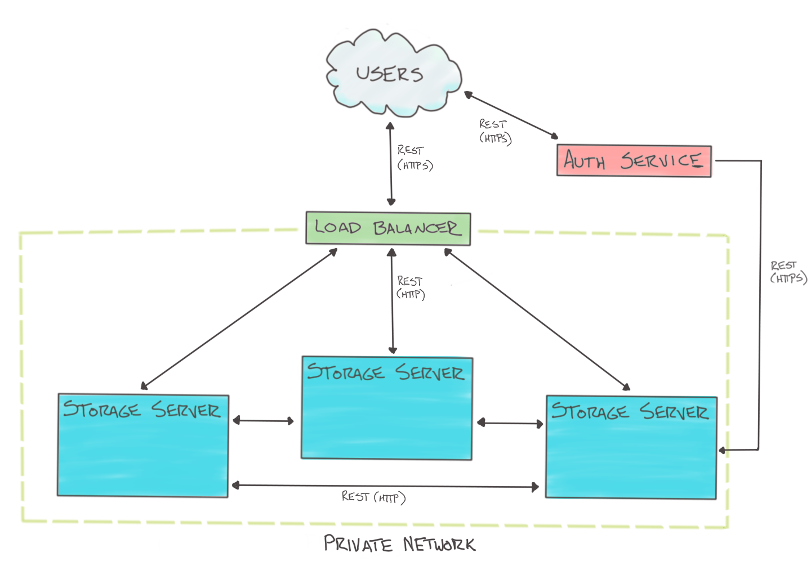

Hummingbird Architecture#
Overall, the Hummingbird architecture is much like the OpenStack Swift architecture. Below are the main differences from what you may be used to with OpenStack Swift:
All executables are folded into a single hummingbird executable with subcommands, including smaller tools like nodes, oinfo, etc. Packaging and deployment scripts may create multiple scripts or service files, but these simply wrap calls to the single hummingbird executable.
Auditors and Updaters are folded into the Replicators.
Dispersion Report and Drive Audit features are implemented within Andrewd.
Expiring objects are supported, but not actively deleted after expiration. Active clean up may be implemented in the future.
No Account Reaper, which removes the contents of deleted accounts in the background. This should be implemented in the future.
No Container Reconciler, which resolves issues with conflicting policies within a single container. A tool for this may be implemented in the future.
No support for Swift’s Container Sync feature.
No support for Swift’s EC feature. Hummingbird will support erasure coding, but the implementation will be quite different with no plans to support Swift’s implementation.
No support for Swift’s Modifying Ring Partition Power feature, therefore no equivalent of the swift-object-relinker.
No support for Swift’s Symbolic Linking feature at this time.
